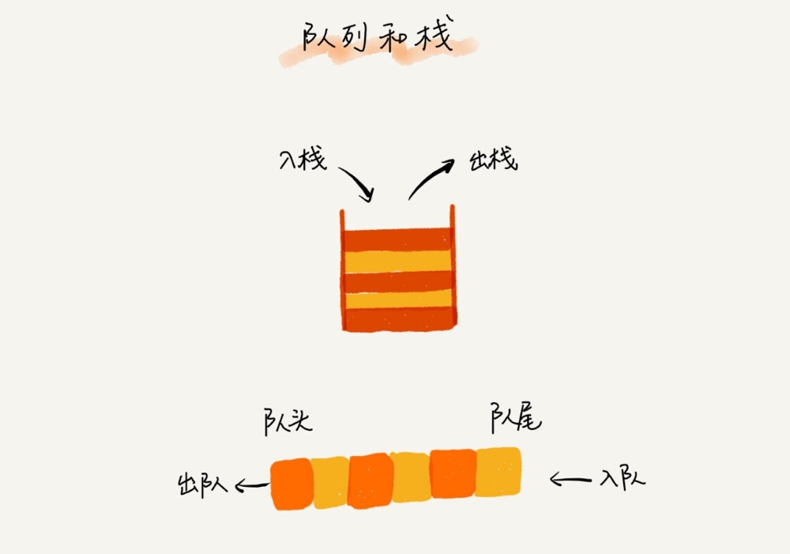
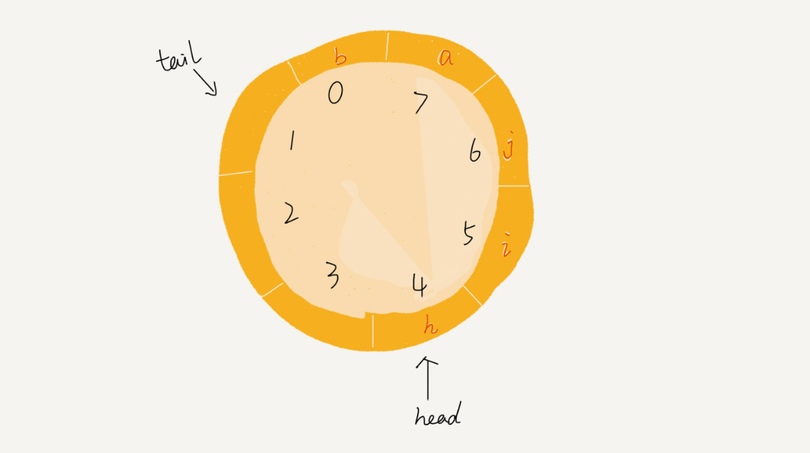
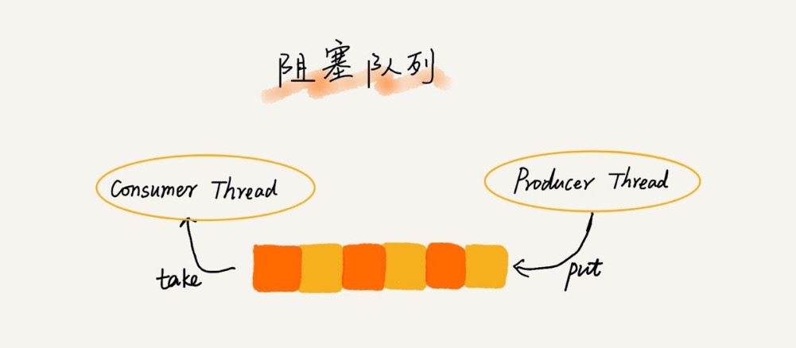
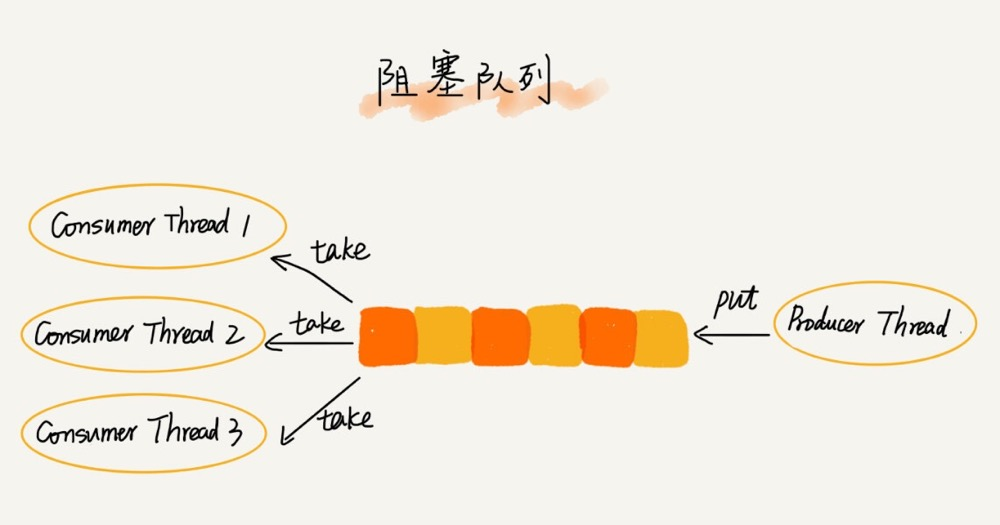

队列学习摘记
- 先进者先出为队列。
- 队列跟栈一样，也是一种操作受限的线性表数据结构。

- 队列可用数组、链表实现。用数组实现的队列叫作顺序队列，用链表实现的队列叫作链式队列。
- 在数组实现队列的时候，会有数据搬移操作，像环一样的循环队列可以有效解决数据搬移的问题。
- 循环队列(力扣622)：
- 确定队空和队满的判定条件
- 当队满时，(tail+1)%n=head
- 队列为空的判断条件仍然是 head == tail。
- 循环队列会浪费一个数组的存储空间（也就是说实现一个容量为10的循环队列，实际上需要申请一个长度为 11 的数组，不然就需要另外设立变量来判断队满）

- 阻塞队列：


- 借由阻塞队列可以轻松实现一个“生产者 - 消费者模型”
- 并发队列:
- 线程安全的队列叫作并发队列。
- 最简单直接的实现方式是直接在 enqueue()、dequeue() 方法上加锁，但是锁粒度大并发度会比较低，同一时刻仅允许一个存或者取操作。
实际上，基于数组的循环队列，利用 CAS 原子操作，可以实现非常高效的并发队列。这也是循环队列比链式队列应用更加广泛的原因。
- 考虑使用 CAS 实现无锁队列，则在入队前，获取 tail 位置，入队时比较 tail 是否发生变化，如果否，则允许入队，反之，本次入队失败。出队则是获取 head 位置，进行 CAS。
- 对于大部分资源有限的场景，当没有空闲资源时，基本上都可以通过“队列”这种数据结构来实现请求排队。比如线程池，分布式应用中的消息队列。
- 线程池没有空闲线程时，新的任务请求线程资源时，线程池该如何处理？各种处理策略又是如何实现的呢？
- 思考方向
- 非阻塞的处理方式，直接拒绝任务请求。
- 阻塞的处理方式，请求排队，等到有空闲线程时，取出排队的请求继续处理。
- 实现方案
- 基于链表的实现方式，可以实现一个支持无限排队的无界队列（unbounded queue），但可能会导致过多的请求排队等待，请求处理的响应时间过长。 所以，针对响应时间比较敏感的系统，基于链表实现的无限排队的线程池是不合适的。
- 基于数组实现的有界队列（bounded queue），队列的大小有限，所以线程池中排队的请求超过队列大小时，之后的请求就会被拒。
所以，对响应时间敏感的系统来说，相对更合理。
- 注意点：如何设置一个合理的队列大小。队列太大会导致等待的请求太多，队列太小会导致无法充分利用系统资源、发挥最大性能。
- 思考方向